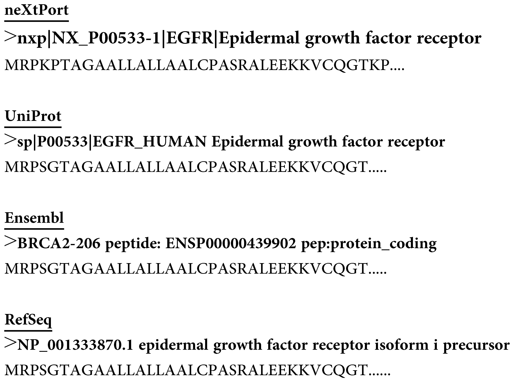

Introduction
Target-decoy database search strategy
The target-decoy search strategy is a commonly used method on shotgun proteomics for estimating the false discovery rate (FDR) of peptide-spectrum matches, and peptide and protein identifications. We provide this website to support users to upload a target sequence database, select an enzyme for in silico digestion, and conveniently generate a decoy sequence database using one of the reverse, pseudo reverse, and pseudo shuffle methods
The reverse method directly reverses each sequence entry in the target database as a decoy sequence. For example, given a target sequence, whether a short protein or a peptide, MNCGRGPDNKCIQ, then the decoy sequence is QICKNDPGRGCNM.
The pseudo reverse method fixes the cleavage sites (K, R), assuming trypsin is used for digestion, of a sequence entry and then reverses the interval sequence between each pair of consecutive cleavage sites as a decoy sequence. For example, given the above target sequence, the decoy sequence is GCNMRNDPGKQIC.
The pseudo shuffle method fixes the cleavage sites (K, R) of a sequence entry and then randomly shuffles the interval sequence between each pair of consecutive cleavage sites as a decoy sequence. For example, given the above target sequence, the decoy sequence can be CGMNRDGNPKICQ.
We recommend use the reverse or pseudo reverse method for protein sequence databases and use the pseudo reverse method for peptide sequence databases to generate decoy databases.
Help
Target sequence database format
Accept sequences in fasta format, such as Uniprot, neXtProt, Ensembl and RefSeq fasta files. Test data: SequenceDatabaseforTesting
Decoy sequence database format
The output file is in fasta format. The prefix decoy tag format is required when using the Trans-Proteomic Pipeline (TPP) for target-decoy database searches. The suffix decoy tag format is required when using SearchGUI and PeptideShaker for identification.

The R script used in our manuscripts: Rscript
Recommended browser: Chrome and Firefox
About Us
This site is maintained by Computational Omics Laboratory, Institute of Information Science, Academia Sinica.
-
Address
128 Academia Road, Section 2,
Nankang, Taipei 115,
Taiwan -
Email
sv.mass.iasl.sinica.tw@gmail.com